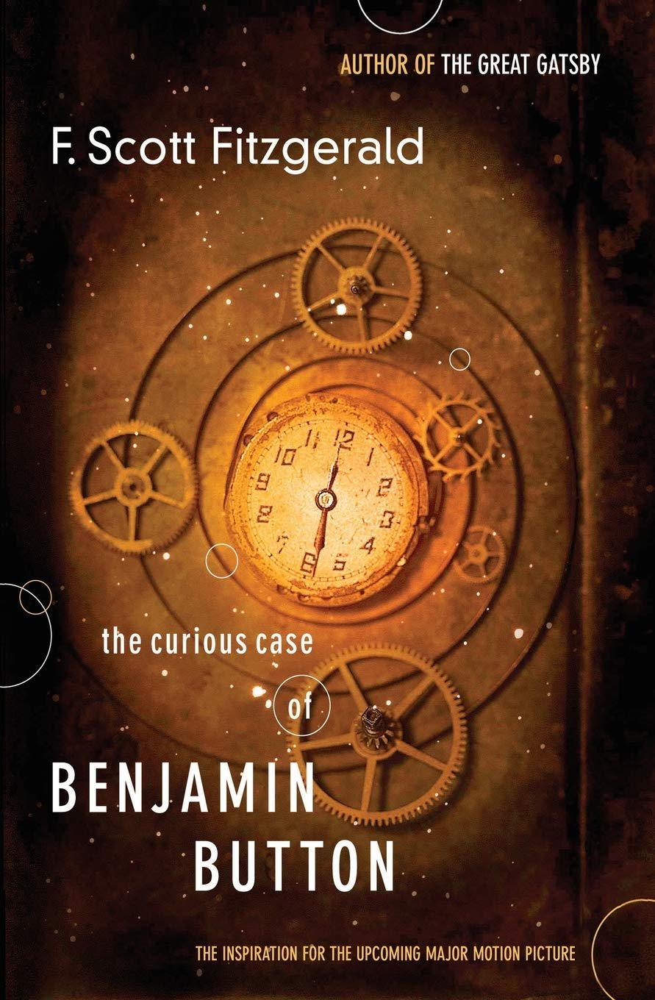
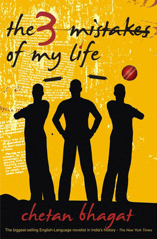
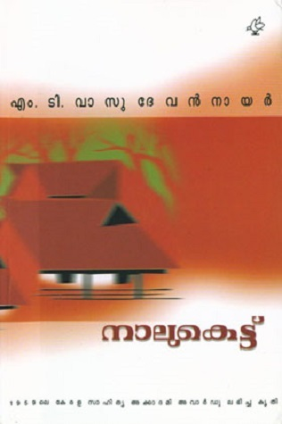

The Curious Case of Benjamin Button

Author: F. Scott Fitzgerald
"The Curious Case of Benjamin Button" is a short story written by F. Scott Fitzgerald. First published in Collier's Magazine on May 27, 1922 with the cover and illustrations by James Montgomery Flagg.
The 3 Mistakes of My Life

Author: Chetan Bhagat
The 3 Mistakes of My Life is the third novel written by Chetan Bhagat. The book was published in May 2008 and had an initial print-run of 420,000. The novel follows the story of three friends and is based in the city of Ahmedabad in western India. This is the third best seller novel by Chetan Bhagat.
Naalukettu

Author: M. T. Vasudevan Nair
Naalukettu is a Malayalam novel written by M. T. Vasudevan Nair. Published in 1958, it was MT's first major novel. The title attributes to Nālukettu, a traditional ancestral home of a Nair joint family.
The Alchemist

Author: Paulo Coelho
The Alchemist is a novel by Brazilian author Paulo Coelho that was first published in 1988. Originally written in Portuguese, it became a widely translated international bestseller.